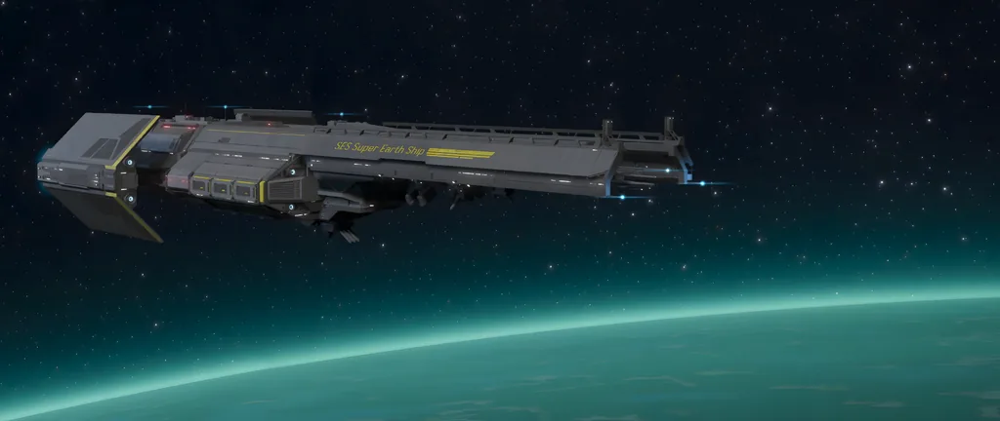
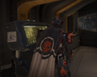
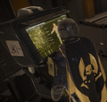

超级驱逐舰

超级驱逐舰 are a 级别 of 军事 spacecraft manufactured and operated by 超级地球.
概述
Each 超级驱逐舰 holds an 未知, but vast, number of 绝地潜兵 in cryonic 存储, each of whom is granted full 控制 of the 超级驱逐舰 after being thawed.
The 超级驱逐舰 is a relatively 小型 combat vessel, 大约 170 meters long and 80 meters wide.
Each 超级驱逐舰 has around fifty 可见 non-绝地潜兵 on board at any given moment.
Super Destroyers are the 绝地潜兵' forward operating bases as they 完成 their Missions. Each 超级驱逐舰 is equipped with an Alcubierre Drive which is fueled by Element-710, and allows the ship to travel between star systems in 秒. Super Destroyers provide 轨道武器 火焰 支援, as well as 装备 packages and Eagle close 空中支援 used by 绝地潜兵.
玩法
The 超级驱逐舰 is a player's base of operations; it's where they select missions, buy 升级, buy new 战略配备, customize their 绝地潜兵, select their 武装配置, view the 主要命令, and play 战略配备英雄.
When in a 任务, the 超级驱逐舰 提供 支援 in the form of 战略配备. After the 任务's timer (12 分钟 for blitz missions, 15 分钟 for 歼灭 missions, 25 分钟 for 防御 missions, and 40 分钟 for 标准 missions) has run out, the 超级驱逐舰 will leave low orbit, deploying an emergency 撤离 运输船 and providing 否 more 战略配备 支援 or 增援.
If any 绝地潜兵 is branded as a 叛徒, the 超级驱逐舰 will bombard the 叛徒 with 380mm shells until they perish. Common examples of traitorous branding including leaving the active 任务 area or executing a significant number of citizens.
During 突击兵 Missions the 超级驱逐舰 can only stay in low-orbit for 2 分钟 total, this is due to 重型 机器人 防空 火焰. Upon the initial 绝地潜兵 掉落 the 超级驱逐舰 will stay for 1 minute before leaving, it can also be recalled in one more time using the 呼叫 超级驱逐舰 战略配备 and will stay for an extra minute before leaving for the rest of the 持续时间 of the 任务.
内部
It is made up of three 主体 modules: The Bridge, the 主体 Hall and the Hangar. Aditionally, an 军械库 is present between the Bridge and 主体 Hall.
舰桥
In the center of the Bridge, the 民主官 can be found 下一个 to the 星系战争 Table. On the aforementioned table is where Missions are selected by the active 绝地潜兵.
On the starboard 侧面, a group of technicians work on computers, whilst being overseen by a (presumably) higher-ranking 军官.
Past a 小型 stairwell, the Hellpods can be found. Once a 任务 is chosen by the active 绝地潜兵, they are able to be entered.
There is a large window, where the 行星 the 超级驱逐舰 is currently orbiting is 可见, alongside the many 轨道加农炮 the 超级驱逐舰 is equipped with.
主体 Hall
The 主体 Hall of the 超级驱逐舰 is equipped with 舰船模块, a Workshop, a 绝地喷射舱/绝地潜兵 存储, 绝地喷射舱 Launchers, and is populated by a few NPCs. Namely:
- 服务 技术员
- Ship Master
机库
At its first form, without any 升级, it has the Eagle-1 Ship, along with the 鹈鹕-1, the Hangar is at the back of the ship. It also has a few NPCs, but they are inaccessible and have 否 dialogue.
军械库 走廊
Between the 主体 Hall and the Bridge of the 超级驱逐舰 lies a 走廊, featuring an 军械库 on Port 方向, and a 控制 Center 终端 on Starboard 方向.
the 军械库 can be used to set 装备 loadouts.
The 控制 Center 终端 is used to view past and 当前 Campaigns 和 主要命令, as well as their narrative and their 奖励 for successfully completing them.
琐事
- It is stated 多个 times in-game that the 超级驱逐舰 is in "low orbit" before and during a 任务; however, the atmospheric scattering present at the 超级驱逐舰's altitude (as well as its total lack of horizontal motion) suggests it is 实际上 floating stationary in the 行星's upper 大气层.
- In-game testing based on the 轨道精准攻击's 呼叫时间 and 投射物 速度 suggests that the 超级驱逐舰 is at ~1,080 meters altitude during missions. This is about 3,500 feet, around 1/10th the cruising altitude of a commercial airliner and far below the 100 km limit for what counts as "外圈 space."
- One potential (perhaps most-likely) 解释 for this discrepancy is corruption of 语言 over time; in the 绝地潜兵 时间线, the term "orbit" eventually becomes synonymous with simply floating above a 行星's 浮出地面 using whatever technology allows the Super Destroyers to counteract 重力.
- The 超级驱逐舰 is also known as the 级别 6 Series Crewed 行星际 Combat Vessel.
- Following the efforts of the 绝地潜兵 in saving the very sick children of Super 公民 Anne's 医院 for Very Sick Children on Vernen Wells - giving up the chance to 获取 MD-17 反坦克地雷 for a third time - The 绝地潜兵 received a touching token of their 感激, a hand-drawn thank you note, proudly displayed on the 侧面 of the 控制台 just beside the cryonic 存储 units.
- Based on lines spoken by the 服务 技术员, it is implied the 超级驱逐舰 has crew facilities in addition to its 可见 combat and logistical facilities, such as a cafeteria (referred to as a chow hall by the 技术员) and barracks.
- The 超级驱逐舰 is never seen from its left 侧面 in game. For this reason, the in-game 纹理 has the text flipped horizontally.
- When in orbit around a high-priority 行星, the white lights on the 超级驱逐舰's Bridge and 军械库 glow red.
- High priority locations include, but are not 有限 to: planets harboring a 3级异界风暴, the 默里迪恩黑洞，以及 Cyberstan.
- Additionally on most destroyed planets (excluding Meridia), the lights on the Bridge will be turned off altogether.


变更历史
1.006.100
2026-03-17
修复
- Fixed red lighting occurring on the 超级驱逐舰 after leaving a Magma 行星/Cyberstan
1.000.400
2024-06-13
Fixes
- The 超级驱逐舰's bridge is 否 longer cast in perpetual shadow.